CMSC424: Query Processing — Parallel Execution of Relational Operators
Instructor: Amol Deshpande
1. Introduction
The previous set of notes established the architectural setting: a shared-nothing cluster where each machine owns its slice of the data, and machines communicate only through explicit network transfers. The question now is: given that a relation \(R\) is partitioned as \(R_1, R_2, \ldots, R_k\) across \(k\) machines, how do we execute the standard relational operators — sort, join, aggregation — in this environment?
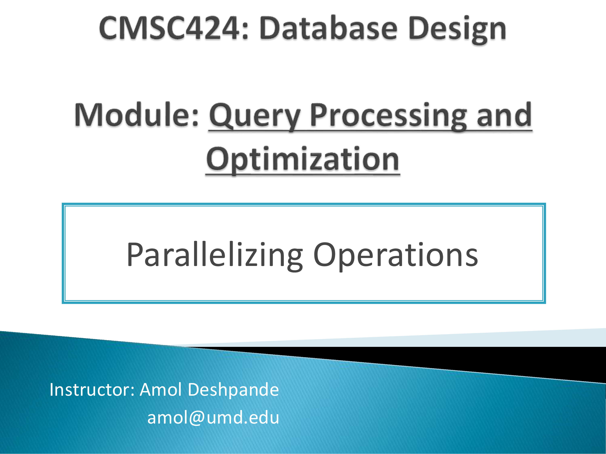
The fundamental challenge is that two tuples which need to interact — because they match on a join attribute, or belong to the same group — may be on different machines. No operator can compare tuples it cannot see. The universal solution is redistribution: before (or during) an operation, move tuples across the network so that tuples that must interact end up on the same machine. This redistribution step is called a shuffle in the parallel computing literature, and it is the central primitive that underlies every parallel operator.
The setup used throughout is as follows. We have \(k\) machines in a shared-nothing cluster. Machine \(i\) holds partition \(R_i\) of relation \(R\) on its local disk and can read it directly without any network transfer. Reading \(R_j\) for \(j \neq i\) requires a message to machine \(j\) and a network transfer of the data back. All of the algorithms we discuss work in this model.
This maps directly to Apache Spark. In Spark, the redistribution of data between stages is explicitly called a shuffle, and it is by far the most expensive step in any Spark job — a point Spark’s documentation and performance tuning guides emphasize repeatedly. The algorithms for sort, join, and aggregation described here are exactly what Spark implements under the hood; the only difference is that Spark adds fault tolerance by writing shuffle data to disk so that lost partitions can be recomputed from lineage rather than restarting the entire job.
2. Parallel Sort
2.1 The Algorithm
The goal is to sort the full relation \(R\) on attribute \(A\), producing a globally sorted result. The challenge: \(R\)’s tuples are spread arbitrarily across \(k\) machines, with no relationship between the values of \(A\) in \(R_1\), \(R_2\), and \(R_3\). A small value of \(A\) might be in \(R_3\) while a large value is in \(R_1\).
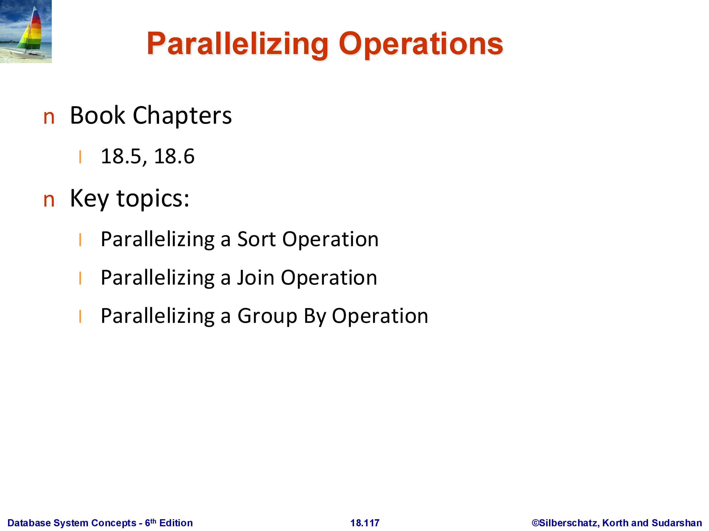
Phase 1 — Local sort. Each machine sorts its local partition \(R_i\) on attribute \(A\) independently. After this phase, machine \(i\) holds a sorted run of \(R_i\). These sorted runs are not globally ordered — the largest \(A\) value in \(R_1\) may be smaller or larger than any value in \(R_2\).
Phase 2 — Range-partition shuffle. Choose \(k - 1\) split points that divide the domain of \(A\) into \(k\) disjoint ranges, one per machine: \((-\infty, s_1)\), \([s_1, s_2)\), \(\ldots\), \([s_{k-1}, +\infty)\). Each machine then scans its local sorted run and routes each tuple to the machine responsible for the range containing its \(A\) value. A tuple with \(A < s_1\) goes to machine 1; a tuple with \(s_1 \le A < s_2\) goes to machine 2; and so on.
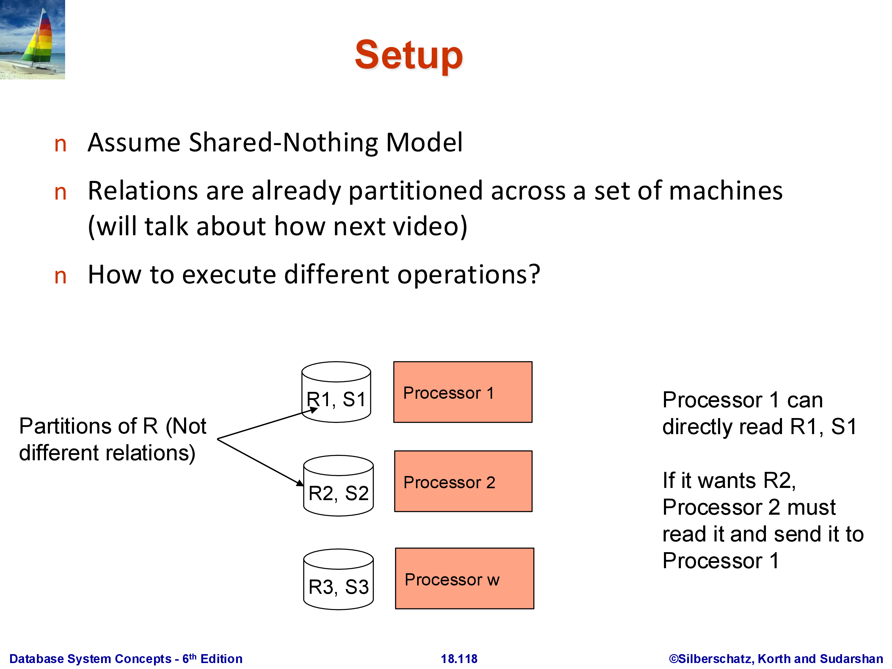
After the shuffle, machine \(i\) holds all tuples from the entire relation \(R\) whose \(A\) value falls in range \(i\) — including tuples that originated on other machines. The key property: range \(i\)’s maximum value is strictly less than range \((i+1)\)’s minimum value. Therefore, once each machine sorts its received data, the result is globally sorted: concatenating machine 1’s output, then machine 2’s, then machine 3’s yields the complete sorted relation.
Phase 3 — Local sort of received data. Each machine sorts the tuples it received from all machines. Since the inbound data is already broken into sorted runs from Phase 1, this final sort can use an efficient merge rather than a full comparison sort.
Note: Phase 1 is not strictly required — the shuffle can be applied to unsorted data, and Phase 3 sorts everything from scratch. The initial sort makes the shuffle slightly cheaper (sorted runs can be streamed and merged efficiently) but does not change the correctness or the asymptotic communication cost.
2.2 Worked Example
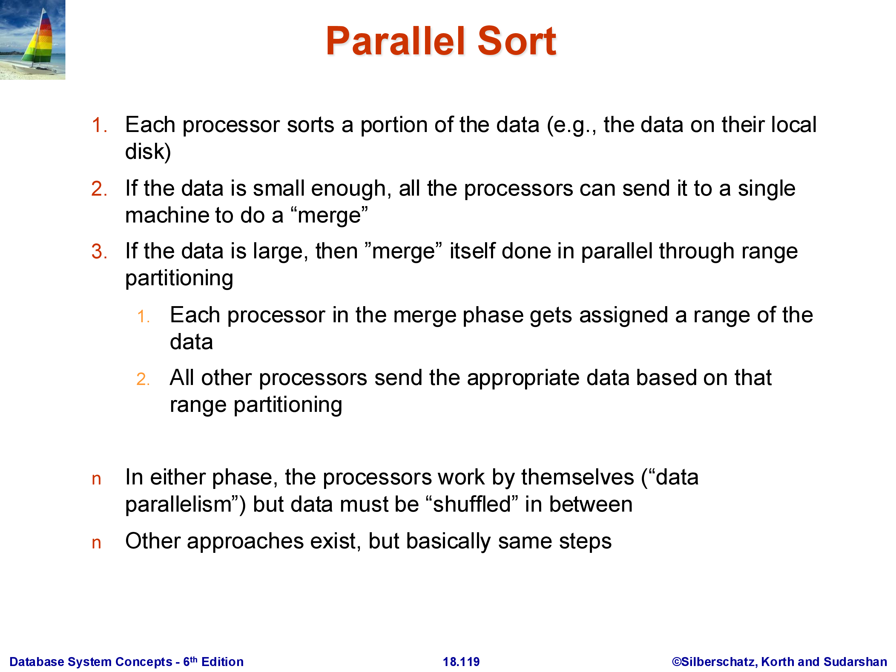
Consider 12 tuples distributed three per machine, with split points chosen so that \(A < 100\) goes to machine 1, \(100 \le A < 300\) goes to machine 2, and \(A \ge 300\) goes to machine 3. After the shuffle, each machine holds its range’s tuples drawn from all three original partitions. Each machine then sorts its received tuples locally. The globally sorted order is obtained by reading machine 1’s output, then machine 2’s, then machine 3’s.
2.3 The Shuffle Is the Expensive Step
The data movement in Phase 2 is substantial. In the worst case, almost every tuple moves from its origin machine to a different destination machine. For a 100 GB relation across 10 machines, each holding 10 GB, Phase 2 may transfer close to 90 GB of data over the network — 9 GB leaving each machine to be distributed among the others. This is why parallel sort, and any operation that requires a shuffle, is significantly more expensive than its single-machine counterpart, and why minimizing the number of shuffles in a query plan is a primary optimization goal in systems like Spark.
2.4 The Skew Problem and Its Remedy
Choosing split points that result in balanced partition sizes is critical for parallel efficiency. If one machine receives half of all tuples while the others receive one-sixth each, the entire sort is bottlenecked on that one machine — the job cannot finish faster than that machine can process its share, and the effective speedup is at most 2× regardless of the total number of machines. This imbalance is called skew.
The standard remedy is to choose split points using statistics. If a histogram on \(A\) is available, the split points can be chosen so that each range contains approximately \(n_R / k\) tuples. If no statistics are available, sampling is used: draw a random sample of \(R\) before the shuffle (e.g., 1% of tuples), examine the distribution of \(A\) in the sample, and set split points accordingly. Modern systems like Spark use range partitioning with sampling for exactly this purpose.
Skew is hardest to handle for intermediate results — the output of a join or aggregation that feeds into a sort or another join. Statistics may not exist for intermediate data, and the sampling must be done on the fly. This is an active area of practical concern in production parallel query systems.
3. Parallel Join
3.1 Standard Parallel Hash Join
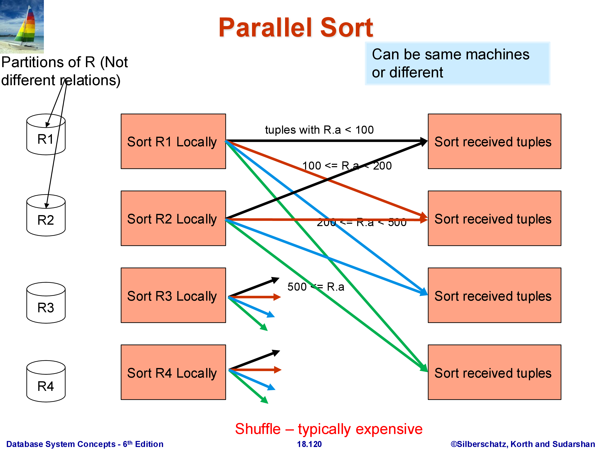
The goal is to compute \(R \bowtie_A S\) where both \(R\) and \(S\) are partitioned across \(k\) machines. The algorithm is a direct parallel extension of the single-machine hash join.
Choose a hash function \(h\) on the join attribute \(A\). Every machine processes its local partitions of \(R\) and \(S\): each tuple with \(A = v\) is sent to machine \(h(v) \bmod k\). Both R-tuples and S-tuples are rerouted this way. After the shuffle, machine \(i\) holds:
- All R-tuples from the entire relation \(R\) whose \(A\) value hashes to \(i\)
- All S-tuples from the entire relation \(S\) whose \(A\) value hashes to \(i\)
Each machine then performs a standard local join on its subset of R and S. The join algorithm for the local step can be anything — hash join, sort-merge join, even nested loops — since it is now a single-machine operation.
Correctness is straightforward: if an R-tuple has \(A = v\), it goes to machine \(h(v) \bmod k\). Every S-tuple with the same \(A = v\) also goes to \(h(v) \bmod k\) — the same machine. Therefore, every matching pair \((r, s)\) with \(r.A = s.A\) is guaranteed to land on the same machine and be found by the local join. It is impossible for the matching S-tuple to be on a different machine than its corresponding R-tuple, because they hash to the same value.
This design separates two concerns: the hash function \(h\) determines where tuples go (the redistribution step), and the local join algorithm determines how they are joined once they arrive. In systems like Spark, these are indeed implemented as separate stages.
Both \(R\) and \(S\) are fully shuffled in this approach. The total data movement is \(|R| + |S|\).
3.2 Worked Example
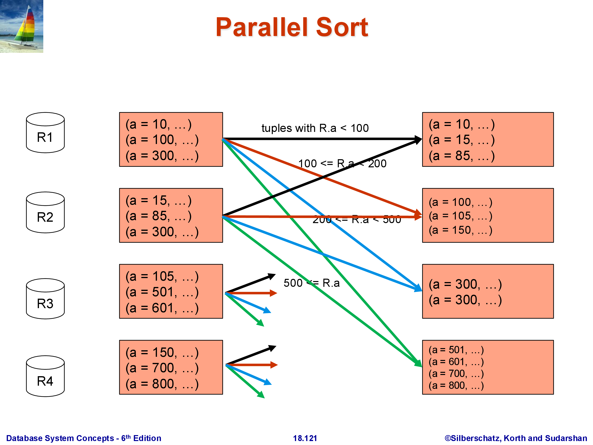
With hash function \(h(A) = A\) (identity) and four machines, a tuple with \(A = 1\) goes to machine 1, \(A = 2\) to machine 2, and so on. After the shuffle, machine 1 holds all R-tuples and S-tuples with \(A = 1\); it joins them locally and produces join tuples. Machines with no matching tuples on one side produce no output. The full join result is the union of each machine’s local join output.
3.3 Fragment-and-Replicate for Asymmetric Relations
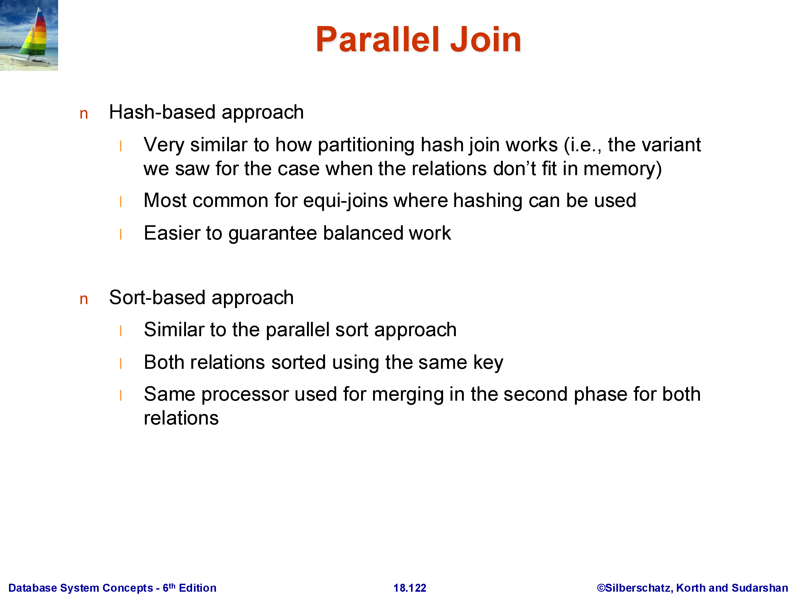
In many practical workloads, one join input is much smaller than the other. A typical example is a dimension table lookup: a large fact table \(R\) (100 GB) is joined with a small dimension table \(S\) (10 MB). The standard parallel hash join shuffles both \(R\) and \(S\), moving 100 GB of \(R\) plus 10 MB of \(S\) across the network. But moving 100 GB is expensive — can we avoid it?
The answer is fragment-and-replicate: instead of redistributing \(R\), leave each partition \(R_i\) where it is and broadcast the entire \(S\) to every machine. Machine \(i\) then computes \(R_i \bowtie S\) locally using \(R_i\) (already present) and the full \(S\) (just received).
The communication cost is \(k \times |S|\): the full \(S\) is sent to all \(k\) machines. For \(|S| = 10\) MB and \(k = 100\) machines, that is 1 GB of total transfer for \(S\) — versus 100 GB to move \(R\). As long as \(k \times |S| \ll |R|\), fragment-and-replicate wins decisively.
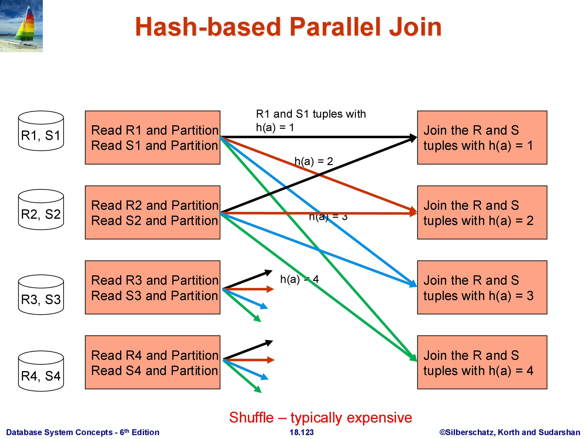
The asymmetry is intentional: we replicate the small relation and fragment (keep in place) the large one. The technique is only beneficial when \(|S|\) is small enough that replicating it does not overwhelm the machines’ memory and network capacity. Choosing between the standard parallel hash join and fragment-and-replicate is a query optimizer decision that depends on the estimated sizes of both inputs — yet another reason why accurate cardinality estimation matters.
4. Parallel Aggregation
Aggregation — GROUP BY A, aggregate_function(B) — is one of the most common operations in analytical workloads, and its parallel execution has more cases than sort or join because different aggregate functions have fundamentally different properties.
The key distinction is decomposability: can a partial aggregate computed on a subset of the data be merged with partial aggregates from other subsets to produce the correct final result? COUNT, SUM, MIN, MAX, and AVG are all decomposable. MEDIAN and MODE are not — there is no way to compute the median of a combined dataset from the medians of its parts.
4.1 Case 1: Small Number of Groups
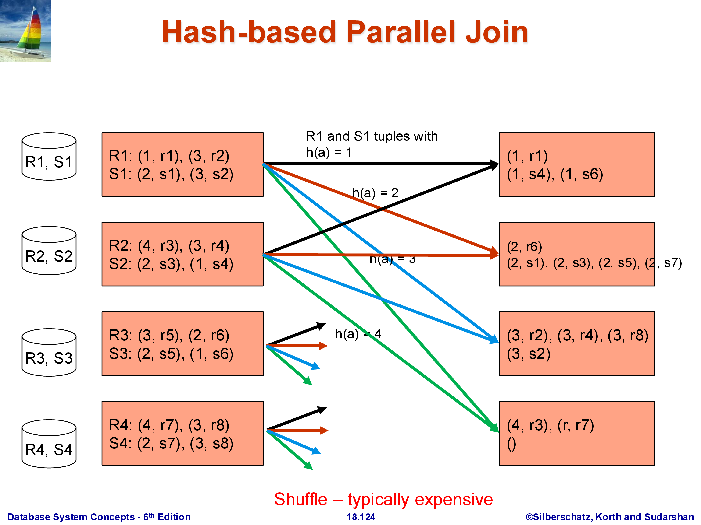
When the number of distinct group keys (distinct values of \(A\)) is small relative to the total data size, the following approach works well.
Phase 1 — Local partial aggregation. Each machine computes a partial aggregate over its own partition \(R_i\). For SUM(B) GROUP BY A, machine \(i\) produces a list of \((A\text{-value}, \text{partial\_sum})\) pairs — one per distinct value of \(A\) observed in \(R_i\). This list is typically much smaller than \(R_i\) itself, because many tuples with the same \(A\) value collapse into a single partial aggregate.
Phase 2 — Collect at coordinator. All machines send their partial aggregates to a single designated coordinator machine. The coordinator merges them: for each group key, it sums all the partial sums, takes the minimum of all partial minimums, and so on.
This works because the number of groups is small: even if there are 10,000 distinct group keys and \(k = 100\) machines, the coordinator receives at most \(10,000 \times 100 = 1,000,000\) rows — far less than the original relation. For AVG, each machine sends (partial_sum, partial_count) per group, and the coordinator computes the final average by dividing the total sum by the total count. This approach cannot be used for MEDIAN or MODE, which require the full list of values — see Case 3.
4.2 Case 2: Large Number of Groups, Decomposable Aggregate
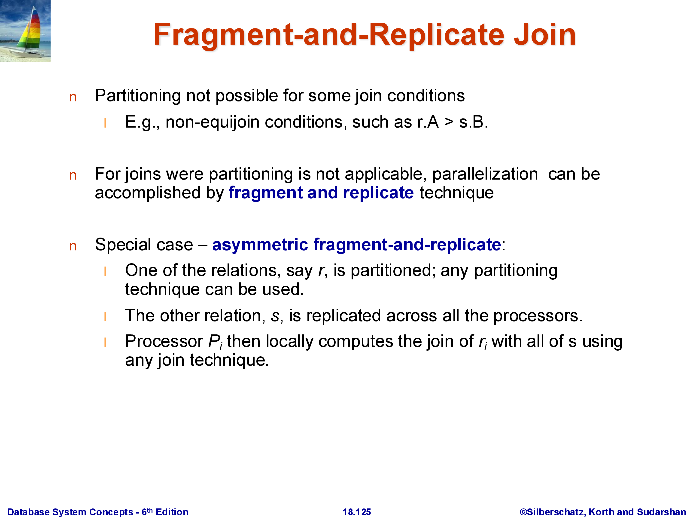
When the number of distinct groups is large — for example, GROUP BY user_id with 100 million distinct users — collecting all partial aggregates at a single coordinator machine is impractical. That machine would receive up to \(k \times 100{,}000{,}000\) rows and would become a severe bottleneck.
The solution is to distribute the aggregation work across all machines using hashing.
Phase 1 — Local partial aggregation. Same as before: each machine computes partial aggregates over its local partition.
Phase 2 — Hash-redistribute partial aggregates. Each machine routes its partial aggregate for group key \(v\) to machine \(h(v) \bmod k\). After this shuffle, machine \(i\) holds partial aggregates from all machines for the groups whose key hashes to \(i\).
Phase 3 — Local final aggregation. Each machine finalizes the aggregates for its assigned groups, merging the partial results from all other machines.
The final result is distributed: machine \(i\) holds the correct final aggregate for all group keys that hash to \(i\). If a subsequent operator needs the complete result on a single machine, an additional collection step is required — but in many pipelines, the distributed result can be consumed directly by the next parallel operator.
This is essentially the MapReduce programming model: Phase 1 is the Map (local partial aggregation), Phase 2 is the Shuffle, and Phase 3 is the Reduce (final aggregation per machine). Hadoop’s word count example, and the Spark reduceByKey operation, implement exactly this pattern.
4.3 Case 3: Non-Decomposable Aggregates (or Pure Grouping)
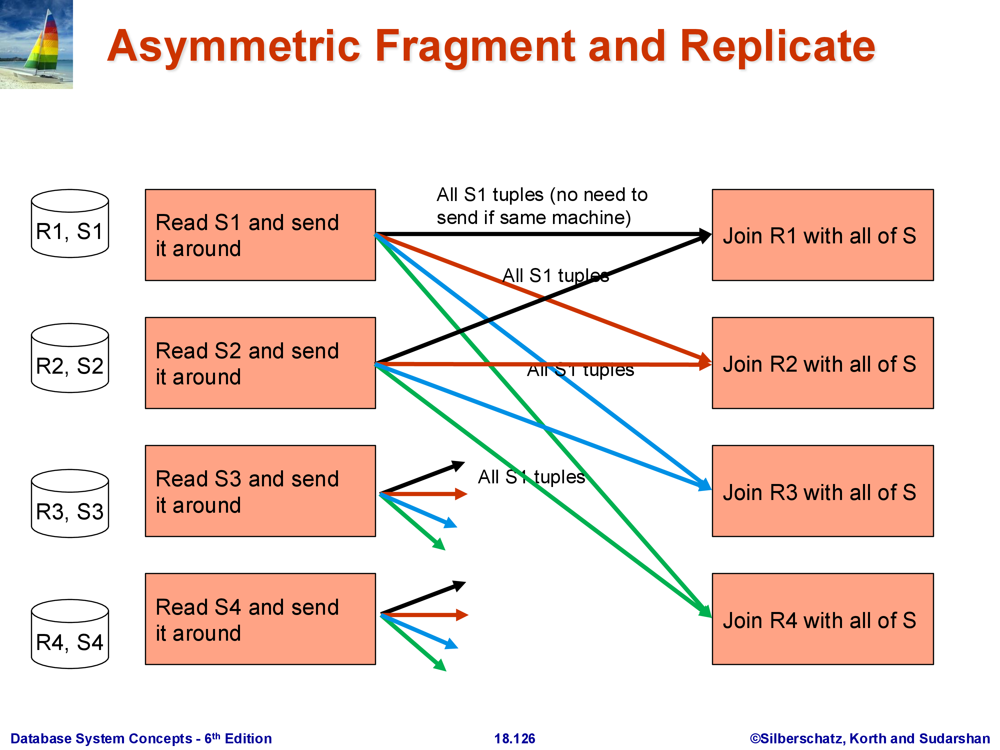
For aggregates like MEDIAN or MODE, no partial result can be computed locally — the median of a partition is not useful for computing the median of the full dataset. The algorithm must route all raw tuples for each group to a single machine.
Algorithm: hash-redistribute all raw tuples by group key — every machine routes its tuple with group key \(v\) to machine \(h(v) \bmod k\). Machine \(i\) then collects all tuples belonging to its assigned groups from all other machines, and computes the final aggregate from the full set of raw values.
There is no Phase 1 reduction. The full relation is redistributed, which makes this the most expensive aggregation case: total data movement equals \(|R|\).
The same algorithm applies to pure grouping (without any aggregate function): the result of GROUP BY A is just the set of distinct group keys, which requires collecting all tuples per key on a single machine. Grouping does not reduce the volume of data — every input tuple must appear in the output — so there is nothing to compress during a local phase.
5. Other Operations
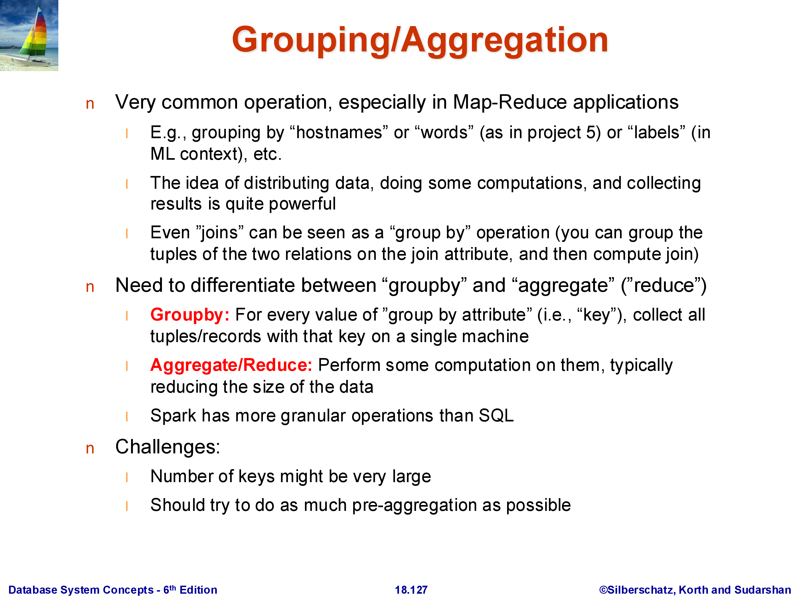
Selection (\(\sigma_\theta(R)\)) is the simplest parallel operator: apply the predicate \(\theta\) to each \(R_i\) on machine \(i\) independently. No shuffle is required. The result is still spread across \(k\) machines, with machine \(i\) holding the subset of \(R_i\) that satisfies \(\theta\). Depending on how \(R\) is partitioned, some predicates may allow the optimizer to skip entire partitions entirely — for example, if \(R\) is range-partitioned on \(A\) and the predicate is \(A > 500\), only machines holding the range \(A > 500\) need to be consulted.
Projection (\(\Pi_L(R)\)) is equally trivial: each machine drops the columns not in \(L\) from its tuples locally. No shuffle is required.
Duplicate elimination requires one shuffle. Each machine first eliminates intra-partition duplicates locally (using sort-based or hash-based dedup). The local results are then hash-redistributed by the full tuple value, so that all copies of any given tuple land on the same machine. Each machine then eliminates the remaining duplicates among the tuples it received. This is exactly the same structure as Case 2 parallel aggregation, with “equality of all attributes” playing the role of the group key.
The common thread: every non-trivial parallel operator reduces to one or more shuffles. Minimizing the number of shuffles in a query plan is the primary optimization problem in parallel query processing — more important than operator algorithm selection, because a single shuffle of a large relation dominates the execution time of a complex query. Systems like Spark model query execution as a directed acyclic graph (DAG) of stages separated by shuffles, and a major focus of the Spark optimizer is to fuse operators that can share a shuffle or eliminate redundant ones.
6. Summary
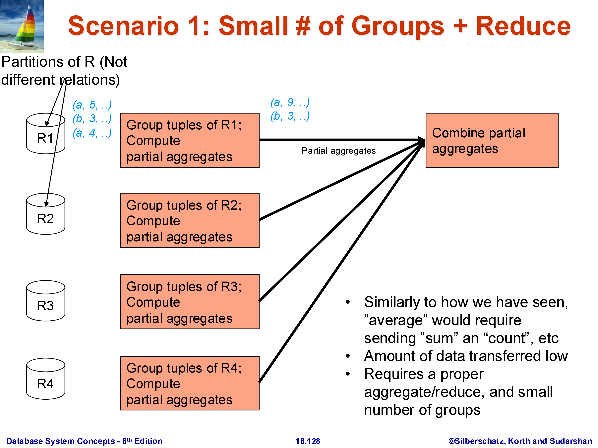
Executing relational operators in a shared-nothing parallel system extends the single-machine algorithms with redistribution steps:
- Parallel sort: local sort, range-partition shuffle, local final sort. Split-point choice is critical; skew in the distribution causes speedup to collapse. Statistics and sampling are used to choose balanced splits.
- Parallel hash join: hash-partition both \(R\) and \(S\) on the join attribute using the same hash function, then local join on each machine. Correctness follows from the fact that matching tuples hash to the same machine. Fragment-and-replicate is the alternative when one relation is much smaller — replicate the small one, keep the large one in place.
- Parallel aggregation: three scenarios. Small groups: local partial aggs, collect at one machine, final agg. Large groups with decomposable aggregates: local partial aggs, hash-redistribute partials, local final agg (MapReduce). Non-decomposable aggregates or pure grouping: hash-redistribute raw data, local final computation.
- Selection, projection: trivially parallel with no shuffle. Duplicate elimination: two-phase hash-based, requiring one shuffle.
The shuffle is the central, expensive primitive. Every operator that requires combining data from different machines must shuffle. Optimizing when and how shuffles occur — and building query plans that minimize them — is where most of the engineering complexity in systems like Apache Spark, Amazon Redshift, and Google BigQuery resides.
This concludes the Query Processing and Optimization module. The topics covered across this module — single-machine operator implementations, query optimization (equivalence rules, cost estimation, plan search), and parallel execution — form the foundation of how every modern data system evaluates SQL queries, whether it is PostgreSQL running on a laptop or Snowflake running across thousands of machines in the cloud.